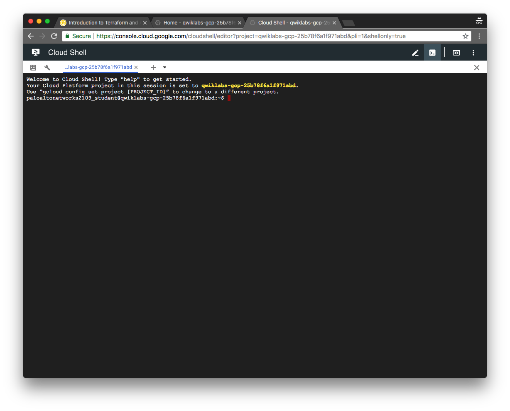

Getting Started
In this activity you will:
- Log into Google Cloud Platform
- Launch the Google Cloud Shell
- Create a new GCP project
Log into Google Cloud Platform
Using your web browser, navigate to https://console.cloud.google.com.
Log in using your Google Cloud Platform credentials. If you do not have a GCP account you can create one at https://cloud.google.com/free.

Click Accept on the logon banner page to accept the Terms of Service. (New accounts only)

Update your account recovery details and click Done. (New accounts only)
Select your country, opt out of email updates, and accept the updated Terms of Service and click Accept. (New accounts only)

Launch Google Cloud Shell
Click the menu icon in the upper left-hand corner of the Dashboard to hide the sidebar menu.
In the upper right-hand corner of the Dashboard, click on the Cloud Shell icon.

A welcome page is displayed when launching the Cloud Shell for the first time. Click Start Cloud Shell to proceed.
The Cloud Shell will appear at the bottom of the Dashboard. Wait a few moments as it provisions and connects to the environment.

You can click on the Open in New Window icon in the Cloud Shell toolbar for a full-sized Cloud Shell display in a new browser tab.

You are now ready to use the Cloud Shell.

Create a new GCP project
In the Cloud Shell window, create a new project using the following gcloud projects command.
$ gcloud projects create terraform-ansible-lab
Then we'll need to change the GCP configuration to utilize this project with the following gcloud config command.
$ gcloud config set project terraform-ansible-lab
Confirm the configuration details with the following gcloud config command.
$ gcloud config list